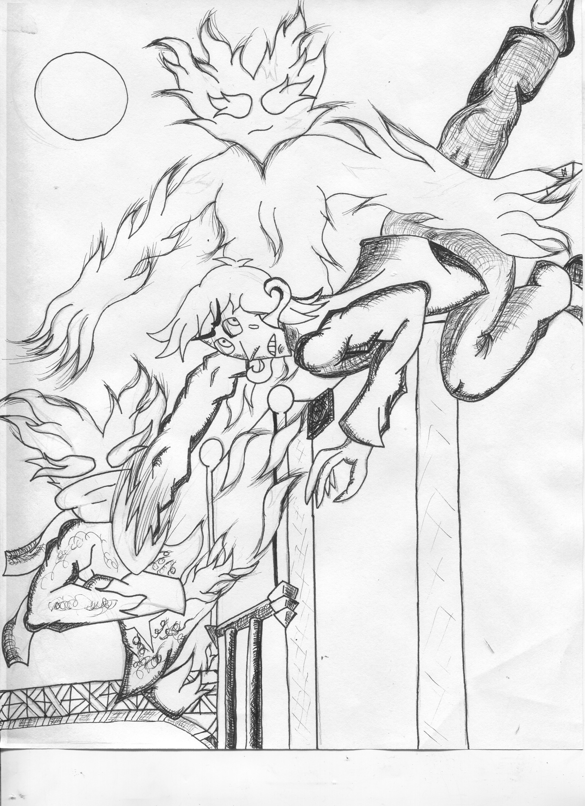

I'm generally into action movies vs non action movies. Now this isn't just because of my short attention span, I like a conflict to be expressed in both a physical way and a metaphysical way (metaphorical might be a better way to put it). The original idea for the Superhero genre was to have a hero represent an idea, type of person, or personality trait. Although most modern superhero media have moved away from this.
Music Interest
I do not have a particular favorite genre of music. If I like a song or soundtrack it goes into a playlist list called “All music”. If I really like a song it is placed into the “Best Music” playlist, from there music is placed into “Best of the Best '' playlist depending on if I really like it, but that's more of an exclusive playlist and there isn't much variety to that.
I do not have a particular favorite genre of music. If I like a song or soundtrack it goes into a playlist list called “All music”. If I really like a song it is placed into the “Best Music” playlist, from there music is placed into “Best of the Best '' playlist depending on if I really like it, but that's more of an exclusive playlist and there isn't much variety to that.
Hobbies
In my free time I play card games. Poker, MTG, Yugioh, I just like card games. My personal favorite is Hearthstone, the most convenient and low skill game ever created. It's a digital collectable card game you can play on your phone or laptop. This is important because I can effectively play a ranked game while on break at work, because it requires little thought or skill to win.
I also draw too. Which leads us to....
My Future Goals

I've always wanted to make a comic. Not as like a job job but more of like a monetizable hobby. I feel like once something is work work it becomes less enjoyable than just being like optional work that you're working on more as a hobby free from professional workplace constrictions, If that makes sense. That's an old picture I can draw better now. I just haven't made the transition to digital.
My Inspirations
My inspiration would have to be a comic called Unordinary. As well as other well told stories I have read, but UnOrdinary showed me that the medium of a comic would be the best way to tell the story I have in mind. Another inspiration was an animated series from my childhood called Gravity Falls. Despite the restrictions put on them by Disney they still managed to push boundaries and create a unique show.